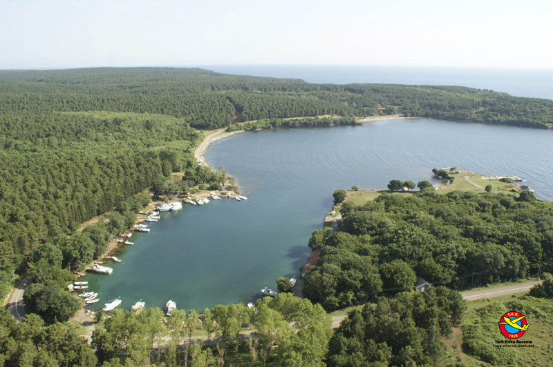

Türkiye'nin en kuzey ucu olan Sinop; Karadeniz kıyısında, Boztepe Burnu'nun karayla birleşme noktasında yer alır. Sinop Kalesi, tarihi ve turizm açısından kentin en ilginç yeridir. Sinop'un merkez nüfusu yaklaşık 49.400'dür.
Sinop bir yarımada üzerine kuruludur ve karadenizin tek doğal limanıdır. Uzun kumsalları ve oldukça fazla yeşil alana sahip olması sebebiyle yazın turistlerin uğrak noktalarından biridir. Sinop'ta yaşayan insanlar geçimini daha çok turizm ve balıkçılıktan kazanır.
Sinop'ta Görülmesi Gereken Yerler
Hamsilos Koyu
Hamsilos koyu Sinop'un önemli doğal güzelliklerinden biridir. Buzul aşındırması sonucu oluşmuştur ve dünyada kendiliğinden oluşan tek koy olarak bilinir.

Erfelek Tatlıca Şelaleleri
Sinop'un Erfelek ilçesine bağlı Tatlıca köyü yakınlarındaki sıra şelalelerdir. Tatlıca irili ufaklı 28 ayrı şelale barındırmaktadır.
Akliman
Sinop'ta görülmesi gereken yerlerden bir diğeri Akliman'dır. Akliman koylardan oluşan ve ziyaretçilerin oldukça ilgisini çeken doğa harikası bir yerdir.
Balatlar Kilisesi
Balatlar Kilisesi ya da diğer adıyla Sinope Koimesis Kilisesi, Bizans döneminden kalma bir kilisedir. 3.062 m²'lik alanı kapsayan kilise milattan sonra 660 yılında yapılmış dikdörtgen planlı bir bazilikadır. Roma dönemindeki ilk inşasında bir hamam olarak hizmet ettiği düşünülen bu yapı kompleksi 6.-7. yüzyıllarda kilise, 11-13. yüzyıllar arasında tahıl deposu, Anadolu Selçukluları ya da kentin Osmanlılarının eline geçmesinden sonra yerli Hristiyan halka bırakılarak Meryem ve Baş Melek Mikail’in birlikte anıldığı bir manastıra dönüştürülmüştür. 1920’lere gelindiğinde ibadetin yanı sıra mezarlık olarak da kullanılmıştır.
Paşa Tabyaları
Paşa Tabyaları, 19. yüzyılda, Osmanlı-Rus savaşları sırasında Rus donanmasının saldırılarını önlemek amacıyla yapılmıştır.
Tarihi Cezaevi
Tarihte birçok ünlü sanatçı ve yazarın mahkum olarak kaldığı ve "Anadolu'nun Alkatrazı" tabiri ile de tanınan Sinop Tarihi Cezaevi, tarihi kale surları içerisine inşa edilmiştir. Üç yanı deniz olan ve tarihi kale duvarlarının içerisinde yer alan cezaevine ev sahipliği yapan kale yaklaşık 4000 yıl önce bölgenin hakimi Gaskalılar tarafından yapılmıştır.